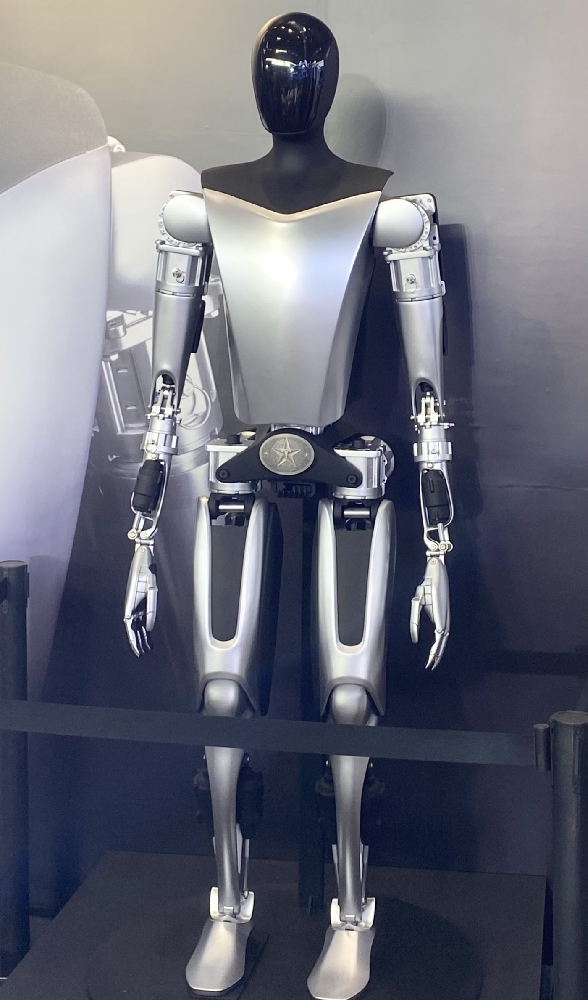

Executive Summary
한국은 향후 10년간 약 1,350조 원(880억 달러)을 반도체 팹과 전력·용수 인프라, AI 데이터센터, 휴머노이드 양산에 쏟는 역사상 최대 규모의 계획을 세웠다. 반도체 800조 원, AI 데이터센터 550조 원처럼 하드웨어에는 투자 주체와 금액, 시설 목표가 또렷한 계정이 붙어 있다. 그러나 정부가 목표로 내건 글로벌 점유율의 진짜 승부처, 곧 로봇이 몸으로 축적해야 할 경험 데이터의 표준과 품질 검증에는 그에 대등한 예산 줄이 없다.
데이터가 아예 빠진 것은 아니다. '데이터 팩토리'와 '로봇훈련소'라는 이름으로 약 1.4조 원이 편성됐고, 정부는 데이터를 4대 축의 하나로 분류했다. 문제는 그 비중이 총액의 0.1%에 그친다는 것, 그리고 정부가 말한 데이터가 전부 '얼마나 많이 모으느냐'는 수집의 언어라는 것이다. 쌓는 예산은 있어도, 쌓인 것을 신뢰할 수 있게 만드는 예산은 없다.
이 글은 바로 그 빠진 한 줄을 따라간다. 팹과 로봇을 사들여도 그 로봇이 생산하는 데이터를 표준 구조로 검증하는 체계가 없으면, 20% 점유율은 하드웨어 위에 쌓은 모래성이 된다. 페블러스가 세 편의 선행 리포트로 지목해 온 공백을 이제 국가 계획이 그대로 반복하고 있다.
1,350조 원
10년 국가 투자
880억 달러 규모. 반도체 800조 + AI 데이터센터 550조가 하드웨어 중심 축
약 0.1%
데이터 인프라 비중
로봇훈련소 1.4조 ÷ 총 1,350조 = 964 대 1. 세 외신 보도엔 부재
1% → 20%
정부의 점유율 목표
국내 휴머노이드 시장 점유율 목표(시점 2028~2030 혼재, 글로벌 아님)
73% → 43%
폐루프 도달률 붕괴
저품질 데이터 무가중 혼입 시(PebbloSim). 정적 청결도로는 안 보이는 붕괴
1,350조 원 예산표를 펼치다: 계정이 붙은 것과 붙지 않은 것
먼저 숫자 하나를 바로잡고 시작한다. 이 계획을 다룬 국내외 보도에서 "880조 원"이라는 표기가 종종 눈에 띄지만, 그런 금액은 어디에도 존재하지 않는다. The Information·MLQ.ai·Tom's Hardware 세 외신은 모두 "880억 달러(880 billion dollars)"로 보도했고, 이를 원화로 환산하면 약 1,350조 원이다. 달러 단위를 원화로 옮기는 과정에서 생긴 흔한 착오이며, 국내 1차·2차 보도는 "1,350조 원"으로 적는다(뉴스핌, 2026.07.13). 이 글은 이후 전량 1,350조 원으로 표기한다.
이 계획의 구조를 뜯어보면 한 가지 규칙이 보인다. 하드웨어에는 이름과 금액과 목표가 또렷이 붙는다. 서남권 반도체 팹에 약 800조 원, AI 데이터센터에 약 550조 원이 배정되고, 각각 투자 주체(삼성·SK 등 민간)와 시설 목표(팹 수, 기가와트 용량)가 함께 발표됐다. 정부는 2028년까지 산업별 휴머노이드를 상용화하고 국내 시장 점유율을 1%에서 20%로 끌어올리겠다는 목표도 내걸었다(서울경제, 2026.06.29). 이 목표들은 모두 살 수 있는 것, 지을 수 있는 것을 향한다.

데이터가 예산에서 완전히 빠진 것은 아니다. 정부의 '피지컬 AI 핵심경쟁력 확보전략'(2026.07.01)은 데이터를 4대 축의 하나로 분류했고, '로봇훈련소'와 '데이터 팩토리'라는 이름으로 약 1.4조 원대 예산을 편성했다. 배경훈 부총리는 "로봇 손끝 감각까지 데이터화"하겠다며 1만 시간 규모의 데이터 확보를 언급했다(한국경제, 2026.07.13). 문제는 그 다음이다. 아래 막대는 세 항목의 크기를 같은 축에 올려놓은 것이다.
10년 투자 배분 — 하드웨어와 데이터 인프라의 비대칭 (단위: 조 원)
출처: 서남권 반도체 팹 800조·AI 데이터센터 550조(정책브리핑·ZDNet Korea, 2026.06~07), 로봇훈련소 1.4조(피지컬 AI 핵심경쟁력 확보전략, 2026.07.01). 데이터 막대는 시각적으로 거의 보이지 않을 만큼 작다.
로봇훈련소 1.4조 원을 총액 1,350조 원으로 나누면 약 0.1%, 비율로는 964 대 1이다. 이 수치 자체보다 더 중요한 사실이 하나 있다. 투자자와 정책 담당자가 실제로 읽는 세 외신 보도에는 이 데이터 항목이 아예 등장하지 않는다. 반도체와 데이터센터, 휴머노이드 양산 대수는 헤드라인에 오르지만, 로봇훈련소는 국내 세부 자료를 파고들어야 겨우 나온다. 예산표에서 데이터는 소수점 이하의 존재이고, 세계가 읽는 요약본에서는 존재하지 않는 것과 같다.
이 '수집'의 언어는 정부 문서에만 있는 것이 아니다. LG는 국내 첫 휴머노이드 '데이터 팩토리'를 지어 로봇을 훈련시키겠다고 발표했다(The Korea Herald, 2026). 이름 그대로 데이터를 '많이 찍어내는' 공장의 은유다. 정부 예산도 기업 발표도 한목소리로 얼마나 많이 모으느냐를 말하지만, 그 데이터를 표준 구조로 검증하고 재사용 가능하게 만드는 일은 어느 쪽 문장에도 담기지 않았다.
이 섹션의 요지는 "데이터가 0원"이라는 과장이 아니다. 데이터는 예산에 있다. 다만 하드웨어의 964분의 1이고, 세계가 읽는 보도에서는 사라진다. 그리고 그 1.4조 원마저 '얼마나 많이 모으느냐'는 수집의 언어로만 서술된다. 표준과 품질이라는 단어는 예산 어디에도 붙어 있지 않다.
휴머노이드의 가치는 몸체가 아니라 경험에서 나온다
왜 데이터가 승부처인가. 오늘의 로봇 지능은 규칙을 사람이 일일이 짜 넣는 방식이 아니라, 데이터로 학습하는 방식으로 만들어진다. 시각·언어·행동을 한 모델에 담는 VLA(Vision-Language-Action) 구조에서 로봇의 능력은 파라미터 수가 아니라 그 로봇이 겪은 상호작용의 다양성과 정합성에서 나온다. 같은 몸체를 가진 두 로봇도 무엇을 얼마나 겪었는지에 따라 능력이 갈린다.
이 명제는 감(感)이 아니라 실증으로 뒷받침된다. 22개 기관이 34개 로봇 플랫폼의 데이터를 하나로 모은 Open X-Embodiment는 100만 개가 넘는 궤적과 527개 스킬을 담았고, 여러 로봇의 데이터를 함께 학습시켰을 때 단일 로봇 대비 일반화 성능이 크게 올랐다. RT-1-X는 약 50%, 더 큰 RT-2-X는 약 3배의 향상을 보였다(Open X-Embodiment, arXiv:2310.08864). 데이터의 규모와 다양성이 곧 성능이라는 사실을 대규모로 보여준 사례다.
그러나 같은 데이터셋이 규모의 함정도 함께 드러낸다. 100만 궤적이라는 총량 뒤에서, 실제 데이터는 특정 플랫폼에 심하게 쏠려 있다. Franka 로봇 한 종이 약 40%, WidowX가 약 25%를 차지한다. 총량은 크지만 골고루 쓸 수 있는 데이터는 그만큼 크지 않다는 뜻이다. 규모가 곧 재사용성은 아니다.
Open X-Embodiment 플랫폼 편중 — "규모 ≠ 재사용성"
출처: Open X-Embodiment Collaboration (arXiv:2310.08864). 비율은 궤적 수 기준 근사치.
그렇다면 부족한 데이터를 그냥 사 오면 되지 않을까. 여기서 로봇 데이터가 반도체 팹과 결정적으로 다른 점이 드러난다. 실세계 로봇 데이터는 실제로 접촉이 일어나야만 생성되는 노동집약 자산이다. 사람 오퍼레이터가 로봇을 원격 조종하거나 시연하며 하나하나 쌓는데, 오퍼레이터 시급은 25~48달러, 프로덕션급 데이터셋 하나를 구축하는 데 5만~20만 달러가 든다. 실세계에서 데이터를 모으는 비용은 시뮬레이션 대비 최대 82배에 이른다는 추정도 있다. 자연 환경에서 모은 대규모 조작 데이터셋 DROID 역시 여러 기관이 수개월에 걸쳐 원격 조종으로 쌓아 올린 결과물이다(DROID, arXiv:2403.12945). 돈이 아니라 시간과 손이 데이터를 만든다.

팹은 자본을 투입하면 지어지고, 로봇은 돈을 주면 사 온다. 그러나 그 로봇이 세상과 부딪히며 남긴 경험은 시간을 들여 직접 쌓거나, 표준에 맞춰 정제·재사용해야 얻어진다. 데이터가 유독 예산에서 '정성적 항목'으로만 남는 구조적 이유가 여기에 있다. 사기 어렵고, 지어지지도 않으며, 오직 축적되고 관리될 뿐이다.
ISO 26264: 로봇 경험 데이터에는 구조가 필요하다
정부가 말한 "1만 시간의 데이터"를 그대로 믿어 보자. 시간을 채우면 쓸 수 있는 데이터가 되는가. 그렇지 않다. 로봇 경험 데이터는 그냥 많이 쌓는다고 학습에 쓸 수 있는 형태가 되지 않는다. 무엇을 어떤 구조로 담느냐가 재사용 가능성을 결정한다. 국제표준화기구가 논의 중인 ISO/WD 26264가 겨냥하는 지점이 바로 이것이다.
이 표준이 요구하는 것은 로봇의 경험을 다섯 겹의 임베디드 구조로 담는 일이다. 어떤 몸체(로봇의 형태·관절)가, 어떤 동작(관절 각도·힘)으로, 어떤 장면(카메라·센서가 본 환경) 안에서, 어떤 실행 흔적(시간에 따른 상태 변화)을 거쳐, 어떤 결과(성공·실패)에 도달했는가. 이 다섯이 동기화된 하나의 단위로 묶여야 나중에 다른 로봇·다른 모델이 그 경험을 다시 학습할 수 있다.
구조 없이 쌓으면 어떻게 되는가. 대표적인 실패가 센서 간 시간 동기화 오차다. 카메라와 관절 센서의 타임스탬프가 단 40밀리초만 어긋나도, 빠르게 움직이는 로봇 팔에서는 그 오차가 최대 10미터에 이르는 위치 오차로 증폭된다. 사람 눈에는 멀쩡해 보이는 데이터가 학습에는 독이 되는 것이다. 앞서 본 실세계와 시뮬레이션의 82배 비용 격차도, 실세계 데이터를 표준 구조로 정제하지 못하면 그 비싼 데이터가 통째로 버려질 수 있다는 뜻이 된다.
"수집했다"와 "쓸 수 있게 쌓았다"는 전혀 다른 말이다. 정부 발표는 전자를 말한다. 로봇훈련소, 데이터 팩토리, 1만 시간 — 모두 얼마나 많이 모으느냐의 언어다. ISO 26264가 요구하는 표준화·품질 검증·재사용성, 곧 후자를 향한 문장은 어디에도 없다. 이 간극이 이 리포트가 세 외신과 정부 발표를 모두 넘어서는 지점이다.
페블러스는 이 문제를 별도의 선행 리포트에서 이미 다뤘다. 로봇 경험 데이터의 표준 구조가 왜 필요한지, 40ms 오차가 어떻게 10m로 증폭되는지, 실세계와 시뮬레이션의 비용 격차가 왜 표준화 없이는 극복되지 않는지를 「휴머노이드 로봇 데이터 ISO 표준」 편에서 정리했다. 이번 국가 계획은 그 표준 논의를 예산의 언어로 번역하지 않은 채 규모만 키운 셈이다.
데이터 없이 하드웨어만 사면: 병목의 이중 구조
이 계획에는 이미 눈에 보이는 병목이 하나 있다. 전력과 용수다. 용인 반도체 클러스터 하나가 완공되면 15~16기가와트의 전력이 필요한데, 현재 확보된 공급은 약 1.9기가와트에 불과하다. 나머지 중 6기가와트가량은 아직 조달 계획이 확정되지 않았고, 이를 메우려면 37조 원 규모의 송전망 1,153킬로미터를 새로 깔아야 한다(Tom's Hardware, 2026). 팹을 지어도 돌릴 전기가 제때 오지 않을 수 있다는 우려는 이미 공론장에 올라와 있다.

여기서 질문을 하나 던져 본다. 전력·용수라는, 그나마 눈에 보이고 금액이 붙은 병목조차 준비 시차가 논쟁거리인데, 그보다 훨씬 덜 보이는 데이터 인프라는 어떻게 되고 있는가. 답은 단순하다. 논의 테이블에조차 오르지 못했다. 병목은 이중이다. 하나는 전력·용수처럼 보이는 병목이고, 다른 하나는 데이터 파이프라인처럼 보이지 않는 병목이다. 그리고 보이지 않는 쪽이 더 위험하다.
데이터가 왜 결정적 병목인지는 품질 검증의 방식에서 드러난다. 데이터 품질은 파일이 깨끗한지, 결측치가 없는지 같은 정적 지표로는 검증되지 않는다. 그 데이터로 학습한 로봇을 시뮬레이션 폐루프에 돌려 실제로 과제를 수행시켜 봐야 드러난다. 페블러스의 PebbloSim 실험이 이를 보여준다. 검증되지 않은 처방 데이터를 아무 가중치 없이 섞어 넣자, 로봇의 과제 도달률이 73%에서 43%로 무너졌고 목표까지의 최소 거리 중앙값은 1.8센티미터에서 11.2센티미터로 벌어졌다.
폐루프 실기 검증 — 저품질 데이터 혼입 전후 (PebbloSim)
출처: 페블러스 PebbloSim 폐루프 검증 실험. 정적 파일 청결도로는 드러나지 않는 성능 붕괴.
이 붕괴는 정적 지표로는 전혀 보이지 않는다. 파일은 멀쩡하고 포맷도 맞다. 그런데 로봇이 실제로 움직이는 순간 무너진다. "데이터 댐 1조 4천억"처럼 규모만 부풀린 형식화가 위험한 이유가 여기 있다. 폐루프로 검증되지 않은 데이터는 아무리 쌓여도 자산이 아니라 부채가 될 수 있다.
20% 점유율의 진짜 승부처: 표준·품질을 예산화한 나라가 이긴다
정부의 목표는 국내 휴머노이드 시장 점유율을 2028~2030년까지 1%에서 20%로 끌어올리는 것이다. 참고로 골드만삭스는 별도 전망에서 한국이 2035년경 글로벌 휴머노이드 생산의 약 30%를 담당할 수 있다고 봤다(Goldman Sachs Research, 2026.06.25). 두 수치는 지표의 정의가 다르다. 하나는 정부의 국내 시장 점유율 목표, 다른 하나는 외부 기관의 글로벌 생산 점유율 전망이다. 섞어서는 안 된다. 다만 둘 다 같은 전제 위에 서 있다. 한국이 휴머노이드를 잘 만들 것이라는 전제다.

그 전제가 성립하려면 로봇이 몸으로 쌓는 경험 데이터를 표준 구조로 검증하고 재사용하는 체계가 있어야 한다. 그런데 경쟁자들은 이 체계를 이미 예산과 제도의 언어로 옮기고 있다. 데이터 전략을 제품·인프라와 분리해서 다루지 않는다는 점이 공통점이다.
| 주체 | 데이터를 다루는 방식 | 핵심 특징 |
|---|---|---|
| 중국 | 국가 표준화기술위원회 설립 | 2025년 말 휴머노이드·임바디드 지능 표준화 기구를 실체로 세우고 2026년 초 표준 체계 공개. 데이터 표준을 국가가 직접 주도. |
| Tesla | 공장이 곧 데이터 파이프라인 | 양산 라인과 실사용 현장을 데이터 수집·순환 구조로 설계. 데이터 확보가 제품 로드맵과 분리되지 않음. |
| NVIDIA | 시뮬레이션이 곧 사업 모델 | Isaac·Omniverse로 합성 데이터 생성과 폐루프 검증을 플랫폼 상품으로 판매. 데이터 생산 자체가 매출원. |
| 한국 | 정성적 언급에 머묾 | 로봇훈련소·데이터 팩토리로 수집은 언급하나 표준·품질 검증은 예산·제도에 부재. |
대비는 선명하다. 중국은 표준을 기구로 세웠고, 두 미국 기업은 데이터 생산과 검증을 각각 공장과 상품으로 만들었다. 한국은 세계 최대 규모의 하드웨어 투자를 결정하면서, 그 하드웨어가 만들어 낼 데이터를 어떤 표준으로 검증하고 재사용할지는 정성적 문장 몇 줄로 남겼다.
제언은 하나로 모인다. 표준·품질 검증을 조기에 예산화하라는 것이다. 1,350조 원의 0.1%가 아니라, 하드웨어 투자에 비례하는 규모로 데이터 표준화·품질 검증 인프라를 별도 계정으로 세워야 한다. 팹과 로봇은 살 수 있지만, 그것들이 쌓을 경험을 신뢰할 수 있게 만드는 일은 지금 예산에 줄 하나를 새로 긋는 데서 시작한다. 20% 점유율의 진짜 승부처는 팹의 개수가 아니라, 그 한 줄이다.
페블러스가 이 질문을 계속 던지는 이유
이 리포트는 갑자기 나온 이야기가 아니다. 페블러스는 지난 두 달 동안 같은 공백을 세 번 지목했다. 6월에는 정부의 4,022억 원 규모 풀스택 전략을 두고 로봇 행동 데이터의 하위 예산판을 짚었고, 7월에는 16조 원 정책금융을 두고 정책금융의 데이터 공백으로 스케일을 넓혔다. 그리고 로봇 경험 데이터의 표준 문제는 ISO 26264 편에서 별도로 다뤘다. 이번 글은 그 세 편을 1,350조 원이라는 국가 최대 캔버스 위에서 다시 읽은 완결편이다.
비즈니스·기술 연결
피지컬 AI는 페블러스의 핵심 사업축이다. 데이터 품질을 진단하는 DataClinic, 시뮬레이션 폐루프로 검증하는 PebbloSim, 합성·행동 데이터를 다루는 DataGreenhouse는 정확히 이 리포트가 지적하는 항목, 곧 로봇 경험 데이터의 수집·표준·품질 검증을 제품으로 만든 것이다. 1,350조 원 계획의 성격 공백은 페블러스가 왜 존재하는지를 국가 스케일에서 설명해 준다.
데이터 품질 관점
휴머노이드의 능력은 파라미터가 아니라 몸으로 축적한 상호작용 데이터의 다양성과 정합성에서 나온다. 저품질·비표준 로봇 데이터는 모델 내부 표현을 왜곡하고, 폐루프 실기에서 도달률 73%→43%, 최소 거리 1.8cm→11.2cm 같은 붕괴로 드러난다. "정적 파일 청결도는 데이터 품질이 아니다, 품질은 동적 폐루프로만 검증된다"는 명제가 국가 투자 논리의 빈틈을 정확히 겨눈다.
고객·파트너 실무 함의
정부·대기업·로봇 스타트업이 팹과 로봇을 사들여도, 그 로봇이 생산하는 데이터를 표준 구조(ISO 26264)로 수집·정제·검증하는 체계가 없으면 투자 수익이 나지 않는다. 하드웨어 다음의 실제 병목은 데이터 파이프라인이라는 실무 우선순위, 그리고 데이터 표준화·품질 검증을 조기에 예산화해야 할 근거를 이 리포트가 제공한다.
Editor's Note. 페블러스는 이 공백을 세 편의 리포트로 먼저 지목해 온 당사자다. 본 완결편은 특정 제품을 팔기 위한 글이 아니라, 한국 피지컬 AI의 데이터 품질·표준 담론을 가장 일관되게 제기해 온 관점에서 국가 계획을 읽은 기록이다. 예산표에 새로 그어야 할 한 줄이 무엇인지, 그 판단은 독자의 몫으로 남긴다.
참고문헌
정책·외신
- 1.The Information (2026). South Korea to Invest $880 Billion in Chips, Robotics, AI Over 10 Years. 2026-06-28. (원 시드 보도, 페이월)
- 2.MLQ.ai (2026). South Korea Unveils $880 Billion Plan to Double Memory Chip Output and Mass-Produce Humanoid Robots.
- 3.Tom's Hardware (2026). Power and water lag the fabs in South Korea's $880 billion chip and AI plan. (용인 15~16GW 필요 vs 1.9GW 공급, 송전망 37조 원·1,153km)
- 4.뉴스핌 (2026). [하반기 경제성장전략] 정부, 반도체·AI에 1350조 쏟는다. 2026-07-13.
- 5.대한민국 정책브리핑 (2026). 서남권에 800조 원 규모 반도체 팹 건설…충청권엔 81조 투자. 2026-06-29.
- 6.ZDNet Korea (2026). 전국민에 '모두의 AI' 보급…반도체·AIDC·피지컬AI 집중 육성. 2026-07-16.
- 7.아시아경제 (2026). 배경훈 "피지컬 AI 1강, 3년이 골든타임…AI 데이터센터 심장 역할". 2026-06-29.
- 8.한국경제 (2026). 로봇 손끝 감각까지 데이터화…정부, 피지컬AI에 1.4조 투입. 2026-07-13. (로봇훈련소·1만 시간·데이터 4대 축)
- 9.서울경제 (2026). Korea to Commercialize Industry-Specific Humanoids by 2028; Samsung to Invest in Gumi. 2026-06-29. (국내 점유율 1%→20% 목표)
- 10.Goldman Sachs Research (2026). South Korea's Growing Role in Humanoid Robot Development. 2026-06-25. (2035 글로벌 생산 점유율 약 30% 전망)
- 11.The Korea Herald (2026). LG to build Korea's first humanoid 'data factory' to train robots.
학술
- 12.Open X-Embodiment Collaboration (2023). Open X-Embodiment: Robotic Learning Datasets and RT-X Models. arXiv:2310.08864. (100만+ 궤적·527 스킬; RT-1-X +50%, RT-2-X 약 3배; Franka 40%·WidowX 25% 편중)
- 13.Khazatsky, A. et al. (2024). DROID: A Large-Scale In-The-Wild Robot Manipulation Dataset. RSS 2024, arXiv:2403.12945.
페블러스 선행 리포트
- 14.페블러스 (2026). 한국 피지컬 AI의 로봇 행동 데이터. 2026-06-29. (4,022억 원·데이터 댐·AgiBotWorld·테슬라 100억 마일)
- 15.페블러스 (2026). 휴머노이드 로봇 데이터 ISO 표준. (ISO 26264·40ms→10m·실세계 vs 시뮬 82배 비용격차)
- 16.페블러스 (2026). 로봇 데이터 큐레이션과 폐루프 공백 (도달률 73%→43% PebbloSim) 및 한국 피지컬 AI 정책금융의 데이터 공백 (16조 정책금융).